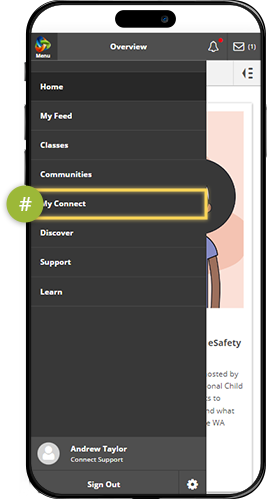

Reports in Connect Now
Quick and easy access to reports in Connect Now anywhere, anytime.
Parents can now have fast and convenient access to their child's reports and assessment outlines on any device.
Check that you have the latest version and log into the ConnectNow app via the AppStore or GooglePlay.
Tap the Connect home button.
Select 'My Children'.
Select your child's name to view their report.
Select 'Reports'.
View the current report by tapping on the PDF link.
View previous reports by selecting the Back arrow.
Parents of secondary students can view Assessment Outlines if the school has enabled this feature.
To see another child's report, tap the Connect home button and then select 'My Children'.
Students now have fast and easy access to their reports and assessment outlines on a mobile device.
Check that you have the latest version and log into the ConnectNow app via the AppStore or GooglePlay.
Tap the Connect home button.
Select 'My Connect'.
Select 'Reports'.
View the most recent report by tapping on the PDF link.
Secondary students can also view assessment outlines located under 'Reports'.